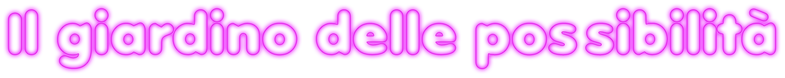
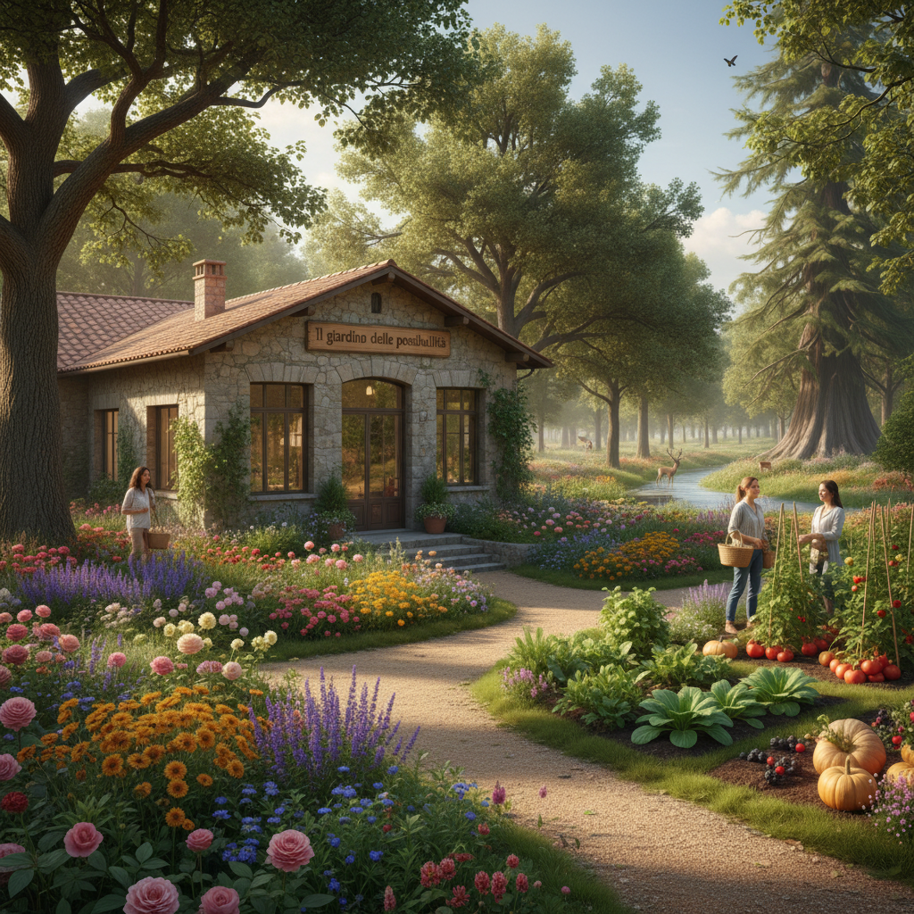
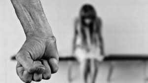
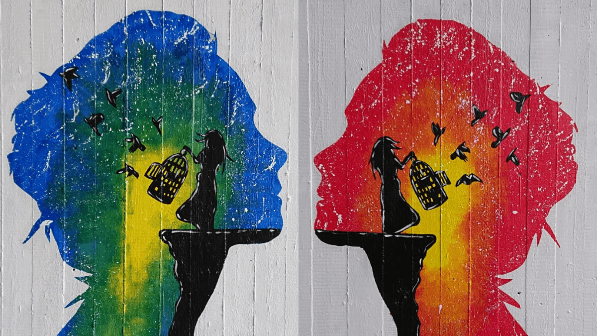
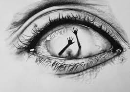
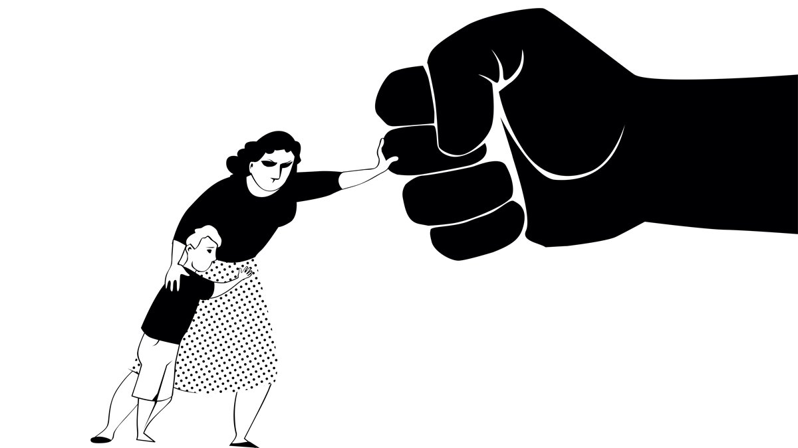

|  |
La casa IL GIARDINO DELLE POSSIBILITA' è un luogo per donne che hanno subito violenza di ogni forma, come fisica, psicologica, verbale, sessuale, economica che unisce protezione, riservatezza e rinascita. Non è solo un edificio: è uno spazio sicuro dove ricominciare, si trova in una radura nascosta tra alberi alti e silenziosi. Il bosco crea una barriera naturale contro il mondo esterno: attutisce i rumori, protegge la privacy e offre un senso di isolamento rassicurante. COME ARRIVARCI: Un sentiero sterrato conduce all'ingresso, abbastanza discreto da non attirare attenzione, ma ben curato per essere sicuro. La casa è semplice, accogliente e in legno. Ha finestre ampie ma protette, un piccolo portico con poltrone e un grande giardino con orto e spazi per coltivare fiori. L'interno dispone di una zona comune, il soggiorno, con tanti divani, coperte calde, una libreria e un camino. Sono presenti anche una cucina condivisa; camere private e una stanza per colloqui per gli incontri con psicologhe o assistenti sociali. E' un luogo dove le donne possono sentirsi al sicuro, ricostruire la propria autostima e ricevere supporto psicologico |
|---|



